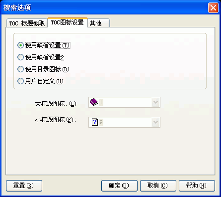

您可以通过选取程序选项菜单下的"搜索选项..."并选取"TOC图标设置"跳格看到这个对话框。关于这个对话框的使用请看下面的具体描述.

使用缺省设置:
使用缺省设置2:
使用程序预设的第二类图标 -
即大标题用书的图标，小标题用文本图标。
用户自定义:
您可以子定义大标题及小标题的图标。
您在新建或打开一个工程后也可以批量修改图标，参见：
目录编辑区 - 批量更改图标对话框
| 版权所有 © 2000-2007 国华软件 保留全部权利. |